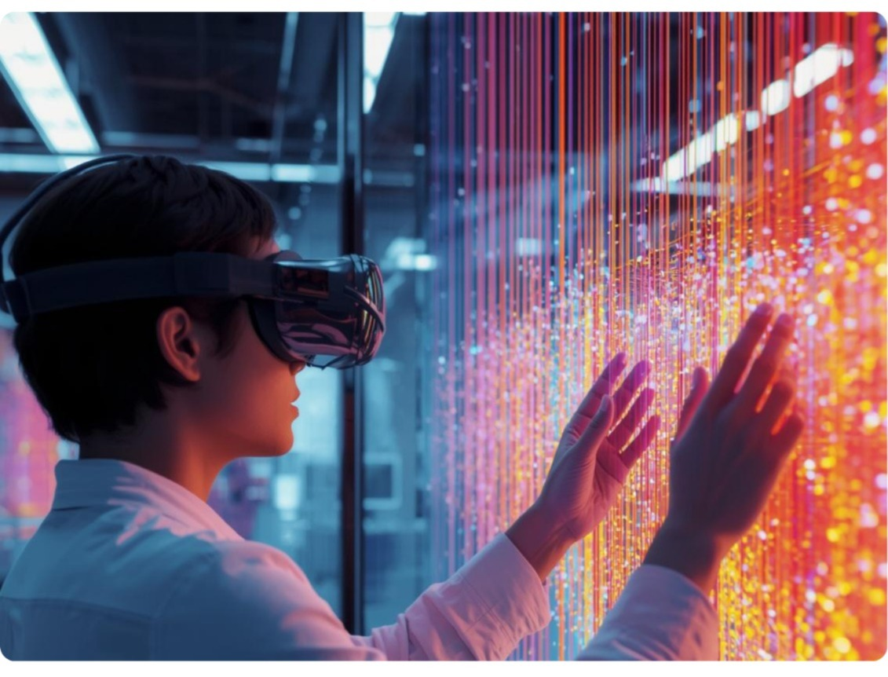

Center of Excellence — IoT & AI
To communicate textile research and its application done by Ahmedabad Textile Industry's Research Association (ATIRA) for a broad audience with enhanced experience.

An enterprise can leverage AI CoE support through five structured stages:
Adopting AI across enterprise operations can improve speed, precision, and overall process quality. The return on investment varies by use case and depends on factors such as the maturity of current processes, solution capability, scale, and budget.
Yes. AI CoE works with both large enterprises and MSMEs across industries, helping them accelerate AI adoption regardless of size.
AI CoE is industry-agnostic. Till date, CoE has enabled AI adoption across 1,000+ manufacturing and industrial organisations, including Engineering, Automotive & Auto Components, Energy & Sustainability, Logistics & Supply Chain, Agriculture, Healthcare, and more. The focus is always use-case-specific.
AI CoE supports adoption across a broad technology stack:
Technology is selected only if it solves a real business problem.
AI CoE recommends year-long enterprise partnerships, covering use case exploration, digital roadmap creation, solution provider scouting, and implementation support. Shorter engagements are also possible for specific assessments or pilots.
AI CoE operates with strong institutional backing:
AI CoE does various activities that help both entities stay connected and updated with on-ground challenges and new technologies — including inviting industry leaders to relevant events and panel discussions, facilitating participation in the AI Innovation Challenge through problem statements, conducting roundtable discussions with select industry leaders on embracing technology at the management level, and more.
To get started, we simply set up a meeting with the concerned person in the team so you can have a one-on-one discussion about the challenges you're facing and how AI can help resolve them.
Most enterprises delay AI adoption waiting for clarity. The real cost is lost efficiency, rising competition, and missed scale advantages.
AI CoE helps you move from exploration to execution — without guesswork.